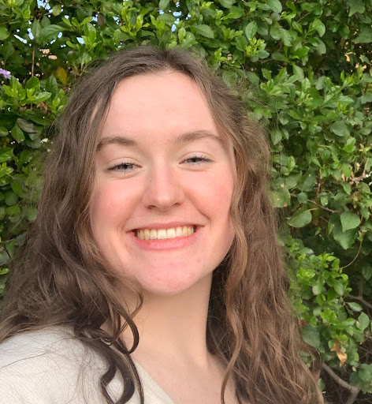
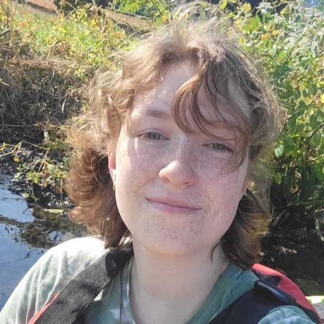

About WaterLogged
Rainfall data is essential for climate modeling, flood prediction, and infrastructure design, yet much of the nation’s current data collection is conducted manually and without the spatial coverage to measure hyper-local variations. Our team designed a low-cost, automated rain gauge with the capacity to expand the National Weather Service’s current gauge network while inspiring future community scientists.
About WaterLogged: Meet the Team
Charlie

Annie

Peyton
Nava
Will